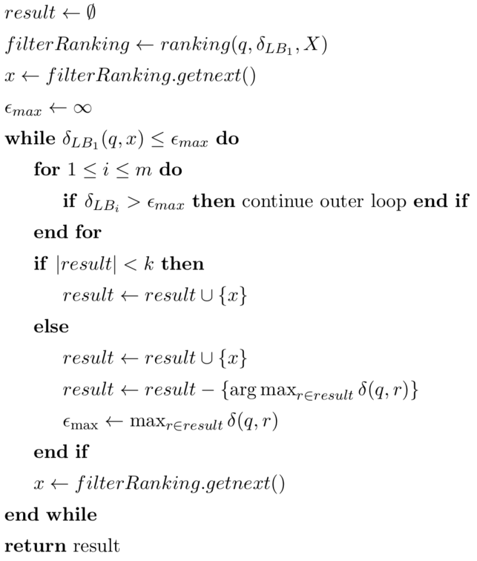

Building a Content-Based Multimedia Search Engine VI: Efficient Query Processing
This is part 6 in a series of tutorials in which we learn how to build a content-based search engine that retrieves multimedia objects based on their content rather than based on keywords, title or meta description.
- Part I: Quantifying Similarity
- Part II: Extracting Feature Vectors
- Part III: Feature Signatures
- Part IV: Earth Mover’s Distance
- Part V: Signature Quadratic Form Distance
- Part VI: Efficient Query Processing
The naive way to process a k-Nearest Neighbor query entails computing the distance between the query object and all database objects, resulting in a time complexity of $\mathcal{O}(|DB|)$ where $|DB|$ refers to the size of the database (cf. [BS13]). If the distance measure is costly to compute, which is usually the case when dealing with complex multimedia objects, this is infeasible. Therefore, we rely on methods that allow us to compute the k-Nearest Neighbors without having to compute the actual distance between the query and all database objects.
One way to speed up the query processing is by means of a lower bound to the distance function $\delta$, i.e. a function $\delta_{LB} : X \times X \rightarrow \mathbb{R}$ for which it holds that $\delta_{LB}(x, y) \leq \delta(x, y)$ for all $x, y \in X$. If we know that the k-Nearest Neighbors have a distance smaller than or equal to $\epsilon_{max} \in \mathbb{R}$, then we can exclude all objects $o$ for which it holds that $\delta_{LB}(q,o) > \epsilon_{max}$ without computing the actual distance $\delta(q, o)$, since this implies that $\delta(q,o) > \epsilon_{max}$.
For most distance functions, lower bounds can be found which are significantly more efficient to compute than the actual distance function, while at the same time allowing us to rule out a large proportion of the database as potential search results.
Multi-Step kNN Algorithm
The Multi-Step kNN Algorithm, proposed by Seidl et al. in [SK98], utilizes a lower bound for efficient kNN search by iteratively updating the pruning distance $\epsilon_{max}$ while scanning the database. As shown in [SK98], this algorithm is optimal with respect to the number of performed computations of the utilized distance function $\delta$. Assuming that we have specified multiple lower bounds $\delta_{LB_1}, ...,\delta_{LB_m}$, this algorithm reads as follows:

The efficiency of this algorithm highly depends on the utilized lower bounds. A good lower bound should meet the ICES criteria defined by Assent et al. in [AWS06]: It should be indexable such that multidimensional indexing structures like X-Tree or R-Tree can be applied. Furthermore, it should be complete, i.e. no false drops occur, which is guaranteed by the lower-bounding property. Moreover, it should be efficient, i.e. its computational time complexity should be significantly lower than the complexity of the actual distance function. Finally, it should be selective, i.e. it should allow us to exclude as many objects as possible from the actual distance computation, which is achieved by approximating the actual distance as good as possible.
If the lower bounds have different time complexities and selectivities, then the ordering of the lower bounds plays a role for the efficiency of the algorithm. In each iteration of the outer loop, we skip the actual distance computation when one of the lower bounds exceeds the current pruning radius $\epsilon_{max}$. Hence, a reasonable heuristic in order to skip as early as possible is to sort the lower bounds in ascending order of their time complexities.
Lower bounds can be devised by exploiting the inner workings of the utilized distance function. There are, however, some lower bounds that are generic in nature, i.e. they are applicable to a wide variety of distance functions, as long as these distance functions fulfill certain properties. In the following, we present a generic lower bound for metric distance functions and lower bounds for the Earth Mover’s Distance.
Metric Lower Bound
If we are dealing with a metric distance function, we can exploit the fact that the distance fulfills the triangle inequality to devise a lower bound (cf. [ZADB06]). Given a query $q$, a database object $o$ and a set of so-called pivot objects $P$, it follows from the triangle inequality that
$$\delta_{LB-Metric}(q, o) = max_{p \in P} |\delta(q, p) - \delta(p, o)| \leq \delta(q, o)$$
The distances $\delta(p, o)$ between all pivot objects $p \in P$ and all database objects $o \in DB$ can be computed in advance and stored in a so-called pivot table of size $|P| \cdot |DB|$. When processing a query, we only need to compute the distances $\delta(q, p)$ between the query and all pivot objects $p \in P$ and store those distances in a list. After that, $\delta_{LB-Metric}$ can be computed in $\mathcal{O}(|P|)$ efficiently by looking up the stored distance values. The selectivity of this approach is highly dependent on the choice of pivot objects $P$ and the distribution of the database objects and the query object.
Lower Bounds for the Earth Mover’s Distance
Rubner Lower Bound
As shown by Rubner et al. in [RTG00], when using a norm-induced ground distance, the Earth Mover’s Distance can be lower-bounded by the ground distance between the weighted means of the two signatures.
Let $X$ be a feature signature and $\delta : \mathbb{F} \times \mathbb{F} \rightarrow \mathbb{R}$ be a norm-induced ground distance. Then it holds that
$$Rubner(X, Y) = \delta(\overline{X}, \overline{Y}) \leq EMD_\delta(X, Y)$$
where $\overline{X}$ is the weighted mean of $X$:
$$\overline{X} = \frac{\sum_{f \in R_X} X(f) \cdot f}{\sum_{f \in R_X} X(f)}$$
Independent Minimization Lower Bound
Proposed in [UBSS14], the Independent Minimization Lower Bound for feature signatures (short: IM-Sig) is a lower bound for EMD that corresponds to the EMD when removing the Target constraint and replacing it with the IM-Sig Target constraint defined as follows:
$$\forall g \in R_X, h \in R_Y : f(g, h) \leq Y(h)$$
Intuitively, this modified target constraint allows to distribute the flow optimally for each representative $g \in R_X$ without considering whether the total flow coming into the target representatives exceeds their weights, as long as the flow from $g$ to $h$ does not exceed the weight $Y(h)$ for all target representatives $h \in R_Y$. We use $IMSig_\delta(X,Y)$ to denote the minimum cost flow with respect to the modified target constraint. Since the set of feasible flows for IM-Sig includes the set of feasible flows for EMD, it holds that $IMSig_\delta(X,Y) \leq EMD_\delta(X,Y)$.
An efficient algorithm for computing $IMSig_\delta(X,Y)$ is given in [UBSS14].
Putting it all together
Let us review what we have learned so far. In Part I: Quantifying Similarity, we have learned how we can quantify the similarity or dissimilarity between two multimedia objects (or representations of these objects) by means of a similarity function or a distance function. Moreover, we have seen the types of query that exist with respect to such functions: The range query and the k-Nearest Neighbor Query. In Part II: Extracting Feature Vectors, we have learned how to extract feature vectors from multimedia objects that capture the visual content of those objects. We have demonstrated this for videos, but the general approach is applicable to a wide variety of other multimedia objects. In Part III: Feature Signatures, we have learned how we can summarize a set of feature vectors into a compact representation called a feature signature which effectively comprises a compressed summary of the contents of the multimedia object. In Part IV: Earth Mover’s Distance and Part V: Signature Quadratic Form Distance, we have learned about two distance measures on these feature signatures that allow us to calculate their dissimilarity and, in effect, the dissimilarity between the two multimedia objects that they represent. In Part VI: Efficient Query Processing, we have learned how to perform k-Nearest Neighbor queries efficiently, without having to compute the pairwise distances between the query object and every object in the database.
We now have all the necessary components in place to build a multimedia search engine. First of all, the database has to be fed with objects to query. For each of these objects, it should store a previously computed feature signature. If desired, we can generate a pivot table for efficient query processing. Next, a user interface has to be provided, which allows the user to upload a query object. For this query object, a feature signature has to be computed, and subsequently the database of feature signatures can be queried using the multi-step kNN algorithm.
References
[AWS06] Ira Assent, Marc Wichterich, and Thomas Seidl. Adaptable distance functions for similarity-based multimedia retrieval. Datenbank-Spektrum, 19:23–31, 2006.
[BS13] Christian Beecks and Thomas Seidl. Distance based similarity models for content-based multimedia retrieval. PhD thesis, Aachen, 2013. Zsfassung in dt. und engl. Sprache; Aachen, Techn. Hochsch., Diss., 2013.
[RTG00] Yossi Rubner, Carlo Tomasi, and Leonidas J Guibas. The earth mover’s distance as a metric for image retrieval. International journal of computer vision, 40(2):99–121, 2000.
[SK98] Thomas Seidl and Hans-Peter Kriegel. Optimal multi-step k-nearest neighbor search. In: ACM SIGMOD Record, volume 27, pages 154–165. ACM, 1998.
[UBSS14] Merih Seran Uysal, Christian Beecks, Jochen Schmücking, and Thomas Seidl. Efficient filter approximation using the earth mover’s distance in very large multimedia databases with feature signatures. In: Proceedings of the 23rd ACM International Conference on Conference on Information and Knowledge Management, pages 979–988. ACM, 2014.
[ZADB06] Pavel Zezula, Giuseppe Amato, Vlastislav Dohnal, and Michal Batko. Similarity search: the metric space approach, volume 32. Springer Science & Business Media, 2006.